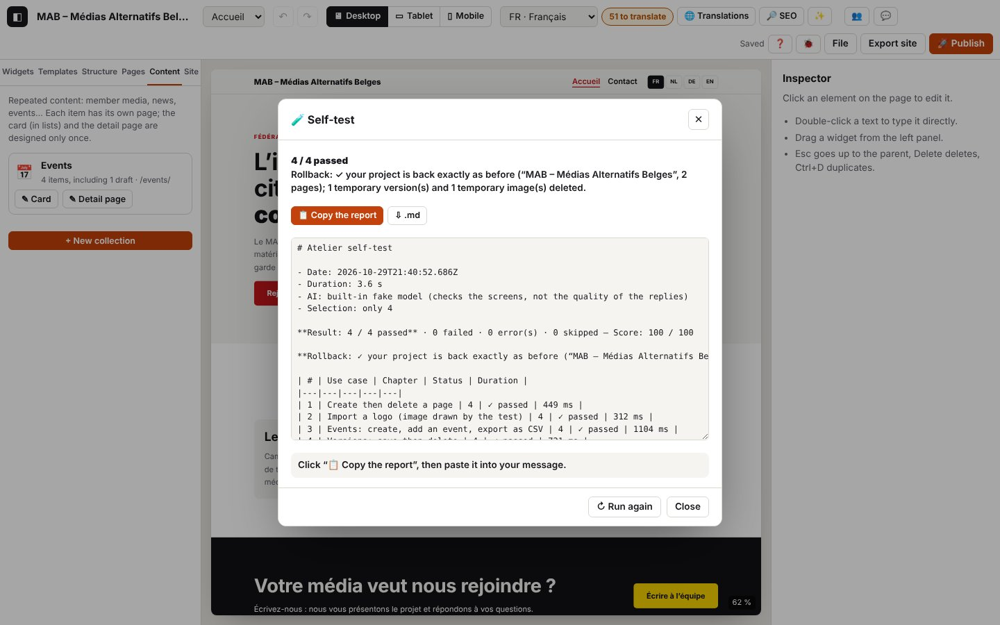

15. Self-test in the console

The log extracts below were captured in French; codes and levels are identical in every language (the messages in your log are in the interface language).
The self-test replays the use cases in this guide in your browser, on your installation, as if someone were clicking for you: it adds a widget, undoes, creates a page, imports a logo, creates an events collection, exports the site, tests the connection to publish.php… For each case, it checks what changed in the project and the expected log (the codes from the previous chapters), then gives a report to paste into your message. Your project is set aside beforehand and put back exactly as it was at the end (undo history included): you can run it as many times as you like.
Log domains: selftest.* (the self-test and the rollback); each case keeps the codes of its chapter (page.*, collection.*, export.*…).
15.1 Running the self-test
Three ways, from the simplest to the most detailed. Each time: do not touch anything and stay on this tab for 20 to 60 seconds (in a background tab, Chrome slows the page down and some cases would go over their time limit). The editor shows the MAB example, windows open and close, then the 🧪 Self-test window shows the result, the rollback and the report: 📋 Copy the report (or ⇩ .md) and paste it into your message.
- Through the address, without the console: open
http://localhost:8888/atelier/?autotest(your address +?autotest). The self-test starts on its own; the address is cleaned up straight away, so reloading does not start it again.?autotest=realuses your Gemini Nano,?autotest=offskips the AI cases. - Ctrl+K “Self-test”.
- In the console (F12, Console tab), a short command to type: It returns a result line and opens the same window. With options:
autotest({ ai: 'real' }),autotest({ only: [4] }).autotest()
Chrome refuses to paste into the console? This is a Chrome protection the first time: type allow pasting by hand (or autoriser le collage if Chrome is in French), Enter, then paste. The simplest is still to type autotest() or to use the ?autotest address.
For developers: copy(await atelierDebug.selftest()) does the same thing without a window and puts the report on the clipboard (copy is a Chrome console command); await atelierDebug.report() gives the last report again.
Options
| Option | Effect | Example |
|---|---|---|
only | only these cases (identifiers or chapter numbers) | atelierDebug.selftest({ only: [4, 'demander'] }) |
skip | all except these | atelierDebug.selftest({ skip: ['publication'] }) |
ai | 'fake' (default): built-in fake model, checks the screens; 'real': your Gemini Nano; false: AI cases skipped | atelierDebug.selftest({ ai: 'real' }) |
publish | true (default): connection test to publish.php with the project's address — read only, never publishes; false: skipped | atelierDebug.selftest({ publish: false }) |
full | adds the whole self-test log to the report (long) | autotest({ full: true }) |
download | also downloads a .json (report, results, log) | atelierDebug.selftest({ download: true }) |
await atelierDebug.cases() lists the identifiers. For the quality of the real Gemini Nano's replies, the right tool is still the test bench (chapter 14); ai: 'real' mainly checks that the screens work with it.
The 26 cases
| Identifier | Chapter | Case | Checked |
|---|---|---|---|
demarrage | 1 | Test project loaded and saved | example shown, storage.save |
journal | 0 | 🐞 window: open, adjust, close | lines shown, setting put back |
selection | 2 | Click, ↓ arrow, Esc | heading, next element, parent column |
ajout | 2 | Widget from the library | one more button, selected |
annuler | 2 | Undo, redo | the button goes, then comes back |
raccourcis | 2 | Ctrl+D, Ctrl+C, Ctrl+V, Delete | number of headings at each step |
texte | 2 | Heading edited in the page | text saved, edit.ok |
panneaux | 2 | Widening the panels (keyboard, double-click) | left and right panels wider, handle announces its width, original width; your widths are put back afterwards |
infobulles | 2 | Button tooltips | hovering over ↶ (“Undo” + keys), quickly passing over ✨, hidden on click |
commande | 2 | Ctrl+K “debug log” | the window opens |
style | 3 | Text size, ↺ | 31px set, then removed |
appareils | 3 | Mobile, then desktop | canvas width |
pages | 4 | Create then delete a page | page opened, then gone |
image | 4 | Logo drawn by the test | image converted, in the project |
collection | 4 | Events, event, CSV | date and title saved, .csv |
versions | 4 | Save then delete | version listed, then removed |
traductions | 5 | Table, filter | table shown |
seo | 6 | SEO, other language | analysis run again |
ia-etat | 7 | Model status | window filled in |
verifier-exporter | 8 | Check, then .zip | export allowed, .zip produced |
enregistrer-json | 1 | Ctrl+S | readable .json with all the pages |
publication | 8 | Test the connection to publish.php | reply from publish.php, up-to-date version |
palette | 12 | Palette from the logo, undo | AA colours, applied then undone |
contenus-texte | 12 | Items from a pasted text (AI) | 3 items suggested, then created |
demander | 13 | “add a 3-question FAQ” (AI) | FAQ added, Ctrl+Z removes it in one go |
collaboration | 10 | Two devices | always skipped (see chapter 10) |
Expected log — through the address (journaux/autotest-adresse.log):
Technical details: expected log
14:34:25.101 +0.06s INFO selftest.auto Auto-test demandé par l’adresse (?autotest) {"ai":"fake"}
14:34:25.413 +0.37s INFO selftest.run.start [selftest.run#1] Auto-test : 25 cas d’usage {"cases":["demarrage","journal","selection","ajout","annuler","raccourcis","texte","infobulles","commande","style","appareils","pages","image","collection","versions","traductions","seo","ia-etat","verifier-exp…
14:34:47.870 +22.83s INFO selftest.run.ok [selftest.run#1 · 22457 ms] Auto-test terminé : 24 / 24 réussis, note 100 / 100 — Retour arrière : ✓ ton projet est revenu exactement comme avant (« MAB – Médias Alternatifs Belges », 3 pages) ; 0 version(s) et 1 image(s) temporaires supprimées. {"total":2…
14:34:47.878 +22.84s INFO selftest.dialog Fenêtre du rapport de l’auto-test {"result":"24 / 24 réussis"}Then, case by case (journaux/autotest-lancement.log, beginning)
Technical details: expected log
14:33:11.064 +2.89s INFO selftest.run.start [selftest.run#1] Auto-test : 25 cas d’usage {"cases":["demarrage","journal","selection","ajout","annuler","raccourcis","texte","infobulles","commande","style","appareils","pages","image","collection","versions","traductions","seo","ia-etat","verifier-exp…
14:33:11.066 +2.89s INFO selftest.backup.start [selftest.backup#1] Mise de côté du projet avant l’auto-test {"name":"MAB – Médias Alternatifs Belges","pages":3,"past":3}
…
14:33:11.076 +2.90s INFO selftest.backup.ok [selftest.backup#1 · 11 ms] Projet mis de côté (mémoire, copie de secours, version de sécurité) {"safety":"v_mvtl2y3lpdk3m","versions":1,"images":1}
…
14:33:11.860 +3.68s INFO selftest.case ✓ Projet de test chargé et enregistré sur l’appareil {"id":"demarrage","status":"ok","ms":776}
…
14:33:12.655 +4.48s INFO selftest.case ✓ Fenêtre 🐞 Journal : ouvrir, régler, fermer {"id":"journal","status":"ok","ms":714}
…
14:33:13.181 +5.00s INFO selftest.case ✓ Sélectionner : clic, flèche ↓, Échap {"id":"selection","status":"ok","ms":445}
…
14:33:13.881 +5.70s INFO selftest.case ✓ Ajouter un widget depuis la bibliothèque {"id":"ajout","status":"ok","ms":619}
…
14:33:15.127 +6.95s INFO selftest.case ✓ Annuler puis rétablir {"id":"annuler","status":"ok","ms":1164}
…
14:33:16.599 +8.42s INFO selftest.case ✓ Dupliquer, copier, coller, supprimer au clavier {"id":"raccourcis","status":"ok","ms":1391}
…
14:33:16.976 +8.80s INFO selftest.case ✓ Modifier un titre directement dans la page {"id":"texte","status":"ok","ms":296}
…
14:33:17.697 +9.52s INFO selftest.case ✓ Infobulles des boutons : survol, raccourci, masquage {"id":"infobulles","status":"ok","ms":639}
…
14:33:18.397 +10.22s INFO selftest.case ✓ Ctrl+K : lancer une commande {"id":"commande","status":"ok","ms":619}
…
14:33:19.351 +11.17s INFO selftest.case ✓ Style : taille du texte, puis réinitialiser {"id":"style","status":"ok","ms":873}
…
14:33:20.221 +12.04s INFO selftest.case ✓ Aperçu mobile puis ordinateur {"id":"appareils","status":"ok","ms":787}
…
14:33:20.749 +12.57s INFO selftest.case ✓ Créer puis supprimer une page {"id":"pages","status":"ok","ms":448}
…
14:33:21.147 +12.97s INFO selftest.case ✓ Importer un logo (image dessinée par le test) {"id":"image","status":"ok","ms":316}
…
14:33:22.344 +14.17s INFO selftest.case ✓ Agenda : créer, ajouter un événement, exporter en CSV {"id":"collection","status":"ok","ms":1116}
…
14:33:23.147 +14.97s INFO selftest.case ✓ Versions : enregistrer puis supprimer {"id":"versions","status":"ok","ms":723}
…
14:33:23.760 +15.58s INFO selftest.case ✓ Tableau des traductions : ouvrir, filtrer {"id":"traductions","status":"ok","ms":532}
…
14:33:24.514 +16.34s INFO selftest.case ✓ Référencement : ouvrir, changer de langue {"id":"seo","status":"ok","ms":672}
…
14:33:25.219 +17.04s INFO selftest.case ✓ IA locale : état des modèles {"id":"ia-etat","status":"ok","ms":623}
…
14:33:25.632 +17.45s INFO selftest.case ✓ Vérifier puis exporter le site en .zip {"id":"verifier-exporter","status":"ok","ms":333}
…
14:33:26.170 +17.99s INFO selftest.case ✓ Enregistrer le projet en .json (Ctrl+S) {"id":"enregistrer-json","status":"ok","ms":457}
…
14:33:26.692 +18.51s INFO selftest.case ✓ Tester la connexion à publish.php (sans publier) {"id":"publication","status":"ok","ms":441}
…
14:33:27.414 +19.24s INFO selftest.case ✓ Palette depuis le logo, puis annuler {"id":"palette","status":"ok","ms":640}
…
14:33:28.350 +20.17s INFO selftest.case ✓ Fiches créées depuis un texte collé (IA) {"id":"contenus-texte","status":"ok","ms":856}
…
14:33:29.514 +21.34s INFO selftest.case ✓ Demander à Atelier : « ajoute une FAQ de 3 questions » (IA) {"id":"demander","status":"ok","ms":1083}
14:33:29.594 +21.42s INFO selftest.case – Collaboration en direct (deux appareils) : ignoré (demande deux appareils : voir le chapitre 10 du guide) {"id":"collaboration","status":"skipped","reason":"demande deux appareils : voir le chapitre 10 du guide"}15.2 Reading the report
The report starts with the result (“23 / 23 passed — Score: 100 / 100”) and the rollback status, then a table of the cases. For each failed case, it gives:
- the failed checks, with what was read (“one more button on the page — expected 3, got 2”);
- the expected log codes that are missing (compare with the case's chapter);
- the unexpected errors (
ERRORlines that are not part of the case); - the extract of the case's log (the last 80 lines).
Then come all the warnings and errors during the test, then the environment (browser, storage, AI, project).
| Status | Meaning |
|---|---|
| ✓ passed | all the checks and all the expected codes, no unexpected error |
| ✗ failed | a failed check, a missing expected code or an unexpected error |
| ⚠ error | the case stopped: element not found, time limit exceeded, exception (the cause is given) |
| – skipped | condition not met: no AI, no publish.php address, two devices needed, stop requested |
Real example: publish.php not found at the project's address (the case fails, the cause is in the report; report extract captured in French):
### ✗ Tester la connexion à publish.php (sans publier) (`publication`, chapitre 8)
- ✗ publish.php répond — réponse 404 qui n’est pas celle de publish.php→ chapter 8, “Test the connection”: check the address and that the file is uploaded in the right place.
15.3 The rollback
Before the first case, your project is set aside three times:
- in memory, with the undo history, and the page, language and device that are open;
- in a backup slot in the browser's local database;
- as a safety version “Before the self-test (date)” (File → Versions).
At the end — even if a case crashes — the editor puts everything back, checks that the project is identical to the original (comparing the content), saves it again and reads it back, puts back the log settings and the browser preferences, then deletes the versions and images created during the test. The backup copy and the safety version are deleted only if the check is good.
Technical details: expected log
14:34:02.229 +2.01s INFO selftest.rollback.start [selftest.rollback#2] Retour arrière : le projet d’avant l’auto-test est remis {"name":"MAB – Médias Alternatifs Belges"}
14:34:02.235 +2.01s DEBUG selftest.rollback.memory [selftest.rollback#2 · 6 ms] Projet et historique remis en mémoire {"same":true,"past":0,"future":0}
14:34:02.258 +2.04s DEBUG selftest.rollback.saved [selftest.rollback#2 · 29 ms] Projet réenregistré et relu à l’identique {"stored":true}
14:34:02.268 +2.05s INFO selftest.rollback.ok [selftest.rollback#2 · 39 ms] Retour arrière terminé : projet identique à l’original {"ok":true,"same":true,"name":"MAB – Médias Alternatifs Belges","pages":3,"versions":0,"assets":0,"problems":[]}
14:34:06.300 +6.08s INFO selftest.run.ok [selftest.run#1 · 5233 ms] Auto-test terminé : 1 / 1 réussis, note 100 / 100 — Retour arrière : ✓ ton projet est revenu exactement comme avant (« MAB – Médias Alternatifs Belges », 3 pages). {"total":13,"ok":1,"fail":0,"error":0,"skipped":12,"score":100,"ms…Stop and roll back straight away:
await atelierDebug.rollback()During a test, the stop happens after the current case (the following cases are “skipped: stopped”), then the project is put back (journaux/autotest-rollback.log):
Technical details: expected log
14:34:02.147 +1.93s INFO selftest.case ✓ Sélectionner : clic, flèche ↓, Échap {"id":"selection","status":"ok","ms":437}
14:34:02.162 +1.94s INFO selftest.stop Arrêt demandé : le projet sera remis après le cas en cours
14:34:02.228 +2.01s INFO selftest.case – Ajouter un widget depuis la bibliothèque : ignoré (arrêté : retour arrière demandé) {"id":"ajout","status":"skipped","reason":"arrêté : retour arrière demandé"}
14:34:02.228 +2.01s INFO selftest.case – Annuler puis rétablir : ignoré (arrêté : retour arrière demandé) {"id":"annuler","status":"skipped","reason":"arrêté : retour arrière demandé"}
14:34:02.228 +2.01s INFO selftest.case – Dupliquer, copier, coller, supprimer au clavier : ignoré (arrêté : retour arrière demandé) {"id":"raccourcis","status":"skipped","reason":"arrêté : retour arrière demandé"}
14:34:02.228 +2.01s INFO selftest.case – Modifier un titre directement dans la page : ignoré (arrêté : retour arrière demandé) {"id":"texte","status":"skipped","reason":"arrêté : retour arrière demandé"}
14:34:02.228 +2.01s INFO selftest.case – Infobulles des boutons : survol, raccourci, masquage : ignoré (arrêté : retour arrière demandé) {"id":"infobulles","status":"skipped","reason":"arrêté : retour arrière demandé"}
14:34:02.228 +2.01s INFO selftest.case – Ctrl+K : lancer une commande : ignoré (arrêté : retour arrière demandé) {"id":"commande","status":"skipped","reason":"arrêté : retour arrière demandé"}
14:34:02.228 +2.01s INFO selftest.case – Style : taille du texte, puis réinitialiser : ignoré (arrêté : retour arrière demandé) {"id":"style","status":"skipped","reason":"arrêté : retour arrière demandé"}
14:34:02.228 +2.01s INFO selftest.case – Aperçu mobile puis ordinateur : ignoré (arrêté : retour arrière demandé) {"id":"appareils","status":"skipped","reason":"arrêté : retour arrière demandé"}
14:34:02.228 +2.01s INFO selftest.case – Créer puis supprimer une page : ignoré (arrêté : retour arrière demandé) {"id":"pages","status":"skipped","reason":"arrêté : retour arrière demandé"}
14:34:02.228 +2.01s INFO selftest.case – Importer un logo (image dessinée par le test) : ignoré (arrêté : retour arrière demandé) {"id":"image","status":"skipped","reason":"arrêté : retour arrière demandé"}
14:34:02.228 +2.01s INFO selftest.case – Agenda : créer, ajouter un événement, exporter en CSV : ignoré (arrêté : retour arrière demandé) {"id":"collection","status":"skipped","reason":"arrêté : retour arrière demandé"}
14:34:02.228 +2.01s INFO selftest.case – Versions : enregistrer puis supprimer : ignoré (arrêté : retour arrière demandé) {"id":"versions","status":"skipped","reason":"arrêté : retour arrière demandé"}
…
14:34:02.268 +2.05s INFO selftest.rollback.ok [selftest.rollback#2 · 39 ms] Retour arrière terminé : projet identique à l’original {"ok":true,"same":true,"name":"MAB – Médias Alternatifs Belges","pages":3,"versions":0,"assets":0,"problems":[]}Page reloaded or tab closed in the middle of a test: at the next start-up, the editor takes the backup copy back on its own, cleans up and tells you (“The self-test was interrupted: your project has been put back as it was.”). In this case the undo history starts again from zero (journaux/autotest-interrompu.log):
Technical details: expected log
14:34:00.237 +0.02s INFO storage.load Projet rechargé depuis cet appareil {"slot":"selftest-backup","name":"MAB – Médias Alternatifs Belges","pages":3,"images":1,"ms":10}
14:34:00.237 +0.02s WARN selftest.recovered Auto-test interrompu : le projet d’avant le test est repris {"at":"2026-10-29T13:33:54.245Z","name":"MAB – Médias Alternatifs Belges","pages":3}
14:34:00.240 +0.02s INFO selftest.rollback.start [selftest.rollback#1] Nettoyage après un auto-test interrompu {"at":"2026-10-29T13:33:54.245Z"}
14:34:00.288 +0.07s DEBUG storage.version-delete 1 version supprimée {"ids":["v_mvtl3veq6n0cs"]}
14:34:00.293 +0.07s DEBUG storage.project-delete Emplacement de projet effacé {"slot":"selftest-backup"}
14:34:00.293 +0.07s INFO selftest.rollback.ok [selftest.rollback#1 · 53 ms] Projet d’avant l’auto-test remis {"versions":0,"assets":0}
14:34:01.032 +0.81s INFO storage.load Projet rechargé depuis cet appareil {"slot":"current","name":"MAB – Médias Alternatifs Belges","pages":3,"images":1,"ms":1}| Situation | Message | Log | What to do |
|---|---|---|---|
| Collaboration session in progress | “Self-test refused: leave the collaboration session first” | selftest.refused (WARN) | the changes would reach the others: leave 👥, run again |
| Review mode | “Self-test refused in review mode.” | selftest.refused (WARN) | same |
| Already running | “A self-test is already running.” | selftest.refused (WARN) | wait, or atelierDebug.rollback() |
| Empty selection | list of identifiers | selftest.refused (WARN) | correct only / skip |
| Incomplete rollback | “Rollback: ✗ …” | selftest.rollback.fail (ERROR) | await atelierDebug.rollback(), or restore “Before the self-test” in Versions |
| Backup copy not found | “… restore the “Before the self-test” version” | selftest.recover-missing (WARN) | File → Versions |
| Clipboard refused | “Copy refused: click in the report, Ctrl+A then Ctrl+C” | selftest.copy-fail (WARN) | select the text of the report, or “⇩ .md” |
Technical details: expected log
14:33:54.175 +46.00s WARN selftest.refused Auto-test refusé en mode relecture {"reason":"readonly"}
14:33:54.179 +46.00s WARN selftest.refused Aucun cas ne correspond à la sélection {"only":["inconnu"]}Codes in this chapter
| Code | Level | Meaning |
|---|---|---|
selftest.run.start, selftest.run.ok, selftest.run.fail | INFO / INFO / ERROR | one complete run (cases, result, rollback status) |
selftest.run.aborted | ERROR | self-test interrupted by an unexpected error (the rollback still happens) |
selftest.backup.start, selftest.backup.slot, selftest.backup.ok, selftest.backup.fail | INFO / DEBUG / INFO / ERROR | setting the project aside (memory, backup copy, safety version) |
selftest.case-start | DEBUG | start of a case |
selftest.case | INFO / WARN | a case finished (status, duration) |
selftest.check-fail | WARN | a failed check, with what was read |
selftest.missing | WARN | expected log codes missing during the case |
selftest.unexpected | WARN | unexpected errors during the case |
selftest.download | DEBUG | download intercepted during the test (nothing is saved on the computer) |
selftest.copy, selftest.copy-fail | DEBUG / INFO / WARN | report copied, or clipboard refused (from the console: DEBUG; window button: INFO / WARN) |
selftest.dialog | INFO | 🧪 report window opened |
selftest.ai-recheck-fail | DEBUG | real AI status not checked again after the test (the report's environment may be incomplete) |
selftest.focus-fallback | DEBUG | the window did not have focus (console, Terminal or another application in front): end of text editing simulated |
selftest.report-download | INFO | report downloaded as .md |
selftest.auto | INFO | self-test requested through the ?autotest address |
selftest.refused | WARN | self-test refused (collaboration, review, already running, empty selection) |
selftest.stop | INFO | stop requested by atelierDebug.rollback() during a test |
selftest.rollback.start, selftest.rollback.ok, selftest.rollback.fail | INFO / INFO / ERROR | rollback (end of test, manual, or at start-up) |
selftest.rollback.memory, selftest.rollback.saved | DEBUG / WARN | project put back in memory; saved again and read back (WARN if different) |
selftest.rollback.assets | WARN | temporary images not removed (harmless) |
selftest.rollback.none | INFO | rollback(): nothing to restore |
selftest.recovered | WARN | at start-up: self-test interrupted, backup copy taken back |
selftest.recover-missing, selftest.recover-fail | WARN / ERROR | backup copy not found; clean-up impossible at start-up |
store.restore | INFO | editor put back in the saved state (project, history, view) |
storage.project-delete, storage.asset-delete | DEBUG | backup copy deleted; temporary images removed |